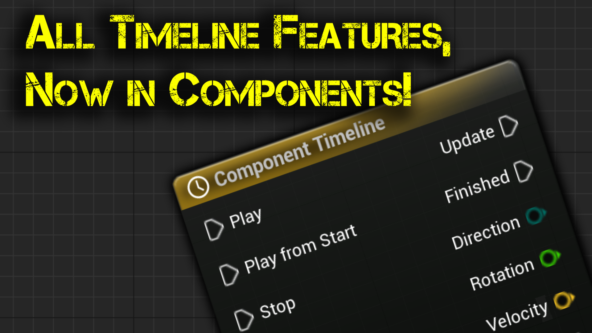
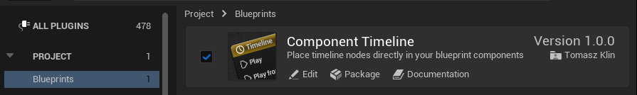
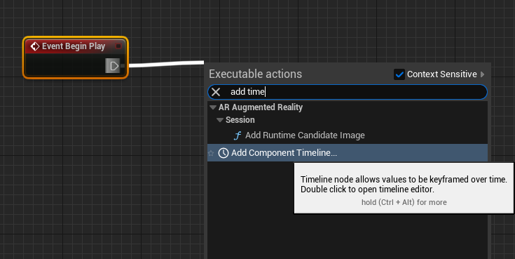
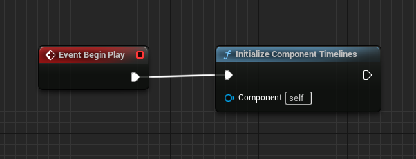
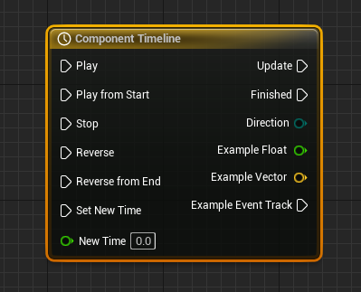
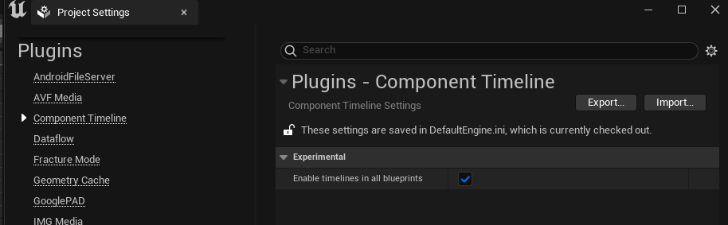
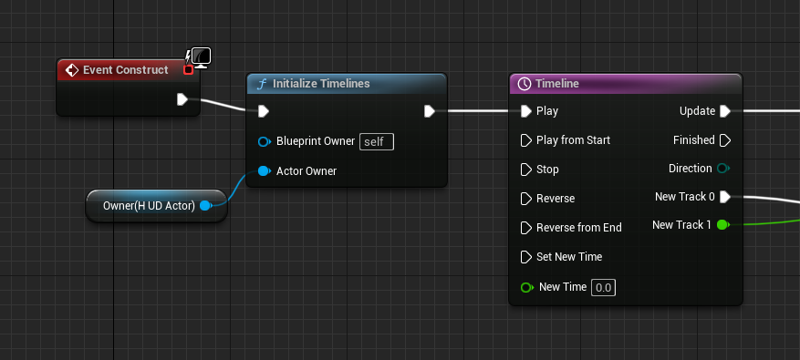

In order to enable the plugin go to Edit -> Plugins, select Blueprints category, and check Enabled for Component Timeline

Right-click in a component blueprint and type Add Component Timeline

To ensure that your timelines function properly, they must be initialized at the beginning of your component's operation. Without initialization, the timelines will not work as intended. To initialize your component timelines, call "Initialize Component Timelines" during Begin Play.

Component timeline node

Component Timeline nodes are special nodes within Blueprints that provide time-based animation to be quickly designed and played back based on events, floats, vectors, or colors that can be triggered at keyframes along the timeline.
Timelines can be edited directly inside the Blueprint editor by Double-clicking on the Timeline in the Graph tab or in the My Blueprint tab. They are specifically built for handling simple, non-cinematic tasks such as opening doors, altering lights, or performing other time-centric manipulations to Actors within a scene. They are similar to level sequences as they both provide values such as floats, vectors, and colors to be interpolated between keyframes along the timeline.
Timelines come with the following input and output pins:
Input Pins
| Item | Description |
|---|---|
| Play | Causes the Timeline to play forward from its current time. |
| Play from Start | Causes the Timeline to play forward from the beginning. |
| Stop | Freezes the playback of the Timeline at the current time. |
| Reverse | Plays the Timeline backwards from its current time. |
| Reverse from End | Plays the Timeline backwards starting from the end. |
| Set New Time | Sets the current time to the value set (or input) in the New Time input. |
| New Time | This data pin takes a float value representing time in seconds, to which the Timeline can jump when the Set New Time input is called. |
Output Pins
| Item | Description |
|---|---|
| Update | Outputs an execution signal as soon as the Timeline is called. |
| Finished | Outputs an execution signal when playback ends. This is not triggered by the Stop function. |
| Direction | Outputs enum data indicating the direction the Timeline is playing. |
Timelines may have any number of additional output data pins reflecting the types of tracks created within them. These include Float, Vector, and Event tracks.
This is an experimental feature, added at the request of one of the users. I have made every effort to make it work well, but I am not able to anticipate all use cases. It should not be used if one does not understand all the limitations it imposes.
The timeline functionality is implemented by the TimelineComponent, so in order to use it, we need an actor for which we can create the component.
The lifespan of the blueprint in which we place the timeline and the actor that manages it should be related. For example, timelines used in widgets on the screen can be linked to the HUD, which is an actor.
It is also not a good practice to use PlayerPawn as a solution for everything. In most cases, it will work, but it will create a lot of clutter in the PlayerPawn.
By default, this functionality is disabled. To enable it, you need to check the "Enable timelines in all blueprints" option in Project settings, under Plugins -> Component Timeline.

The option only takes effect after the editor is restarted, so restart it before looking for the node.
To use the timeline functionality, you can insert a timeline into a blueprint as usual. Then, you can initialize the timelines in the blueprint's event that begins blueprint work (e.g. BeginPlay/Construct) using the "Initialize Timelines" node. Give that node the actor that is to own the timelines - the one whose lifespan the blueprint's own follows.
